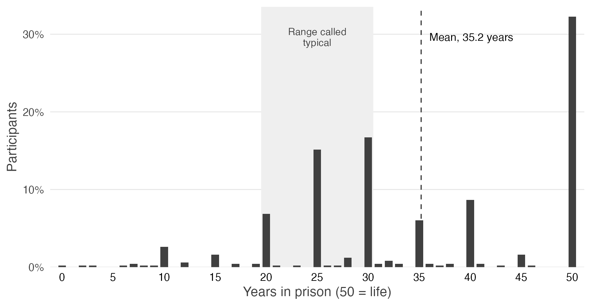
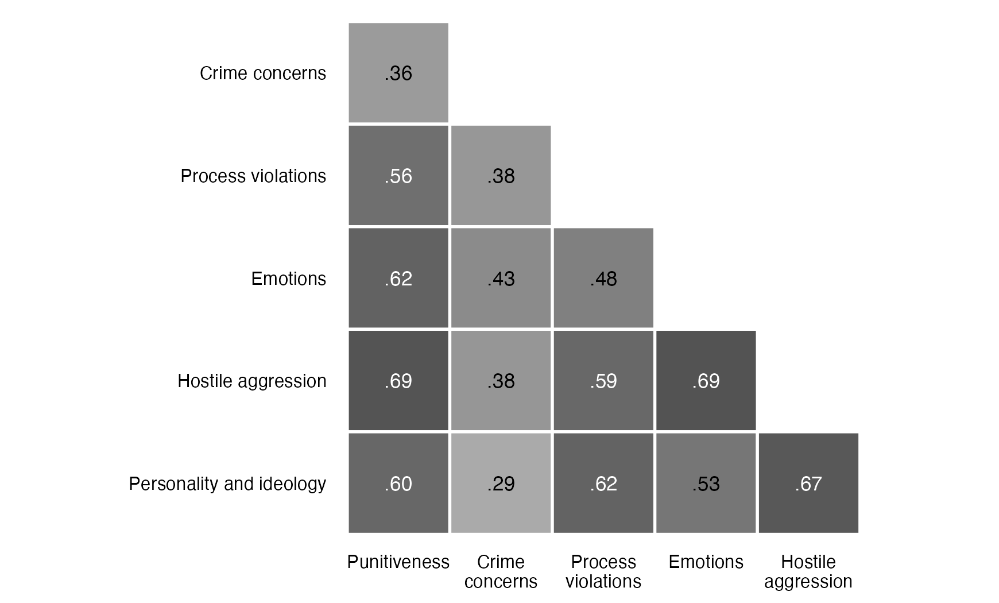
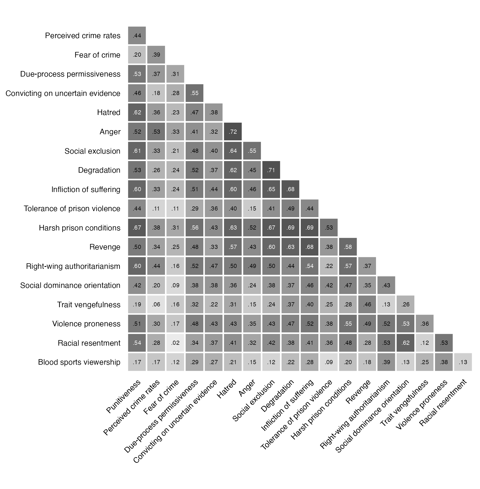
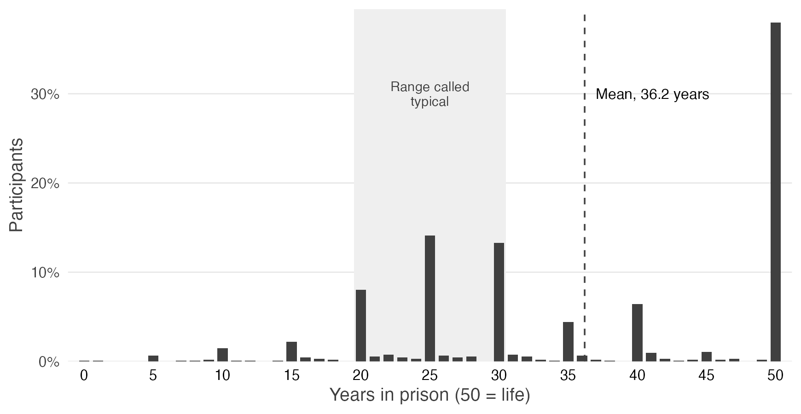
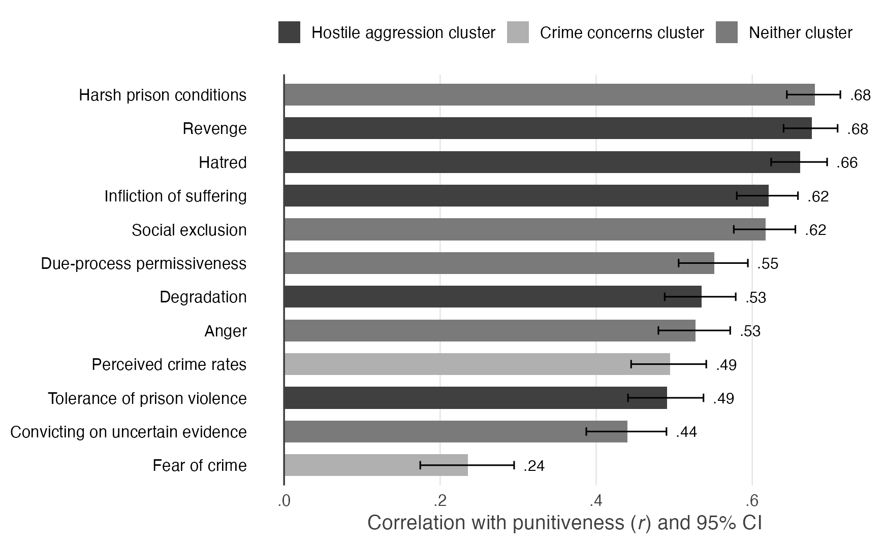
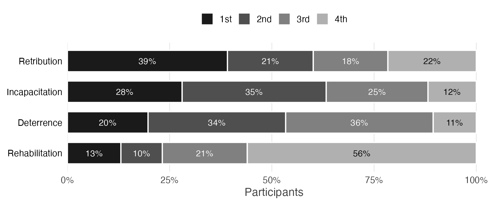
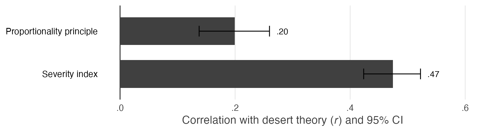
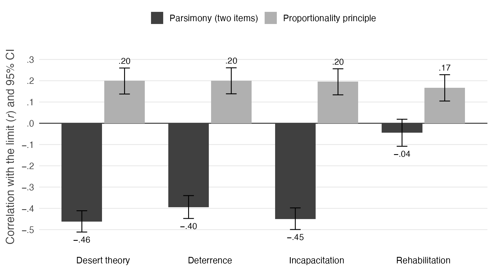
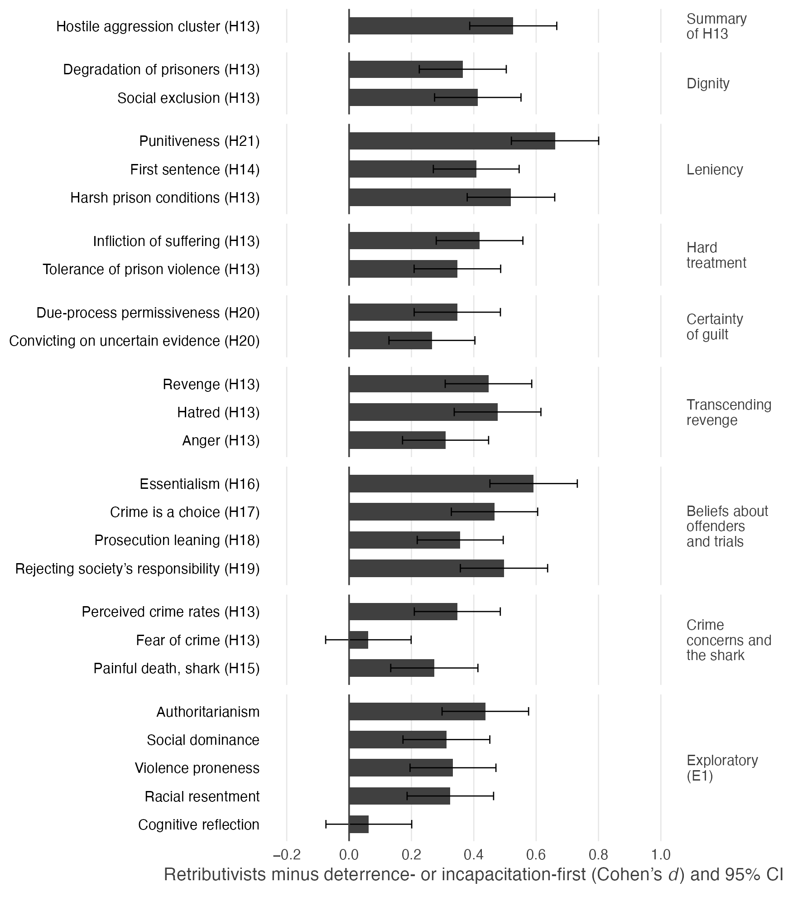
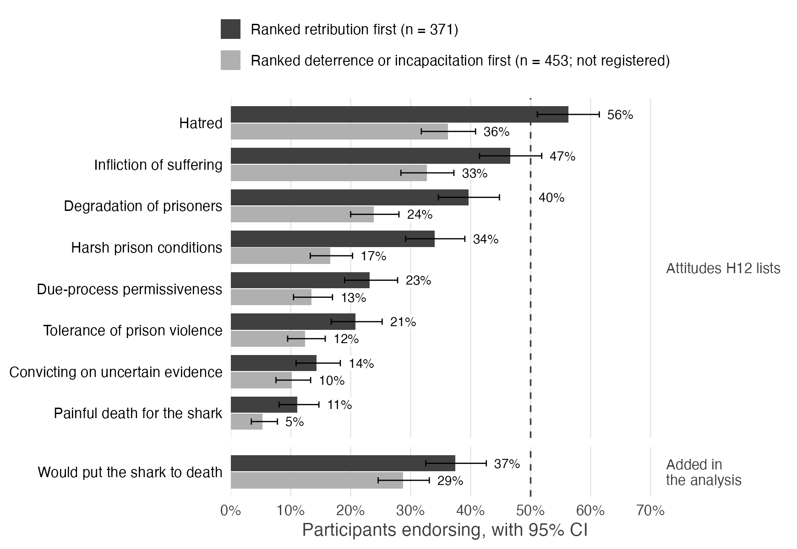

What the paper asks
The paper asks what role the psychology of the punisher plays in criminal punishment, and whether people who favor retribution live up to the theory's image. Both studies surveyed U.S. adults recruited through Prolific's representative sample, with quotas for age, sex, ethnicity, and political affiliation, and both were preregistered. Study 1 (496 participants) relates punitiveness to eighteen psychological correlates and compares hostile aggression toward offenders with concern about crime. Study 2 (948 participants) repeats Study 1's main tests and then examines retribution: whether its two components, desert theory and the proportionality principle, hang together, and how the participants who ranked retribution first among four goals of punishment (the retributivists) compare with other participants.
(December 2025 to January 2026)
(July 2026)
of punitiveness
retribution first
Key findings
The numbers below are from the paper's Results. Both studies are correlational surveys: they show which attitudes go with punitiveness, not what causes it.
All 18 correlates were positively related to punitiveness, and all 18 correlations remained significant after Benjamini-Hochberg correction. The three strongest were with harsh prison conditions (r = .667), hatred of offenders (.620), and social exclusion (.610); the weakest were with trait vengefulness (.190) and blood sports viewership (.166).
The hostile aggression cluster correlated with punitiveness at r = .690, 95% CI [.641, .734], and the crime concerns cluster at r = .360 [.280, .434]; Steiger's Z = 8.54, p < .001. The difference was Δr = .331, with a bootstrap (BCa) 95% CI of [.240, .431].
Hostile aggression: social exclusion, degradation, infliction of suffering, tolerance of prison violence, harsh prison conditions, and revenge. Crime concerns: perceived crime rates and fear of crime. Each cluster is the mean of its items.
Punitiveness correlated positively with all twelve preregistered correlates. It correlated r = .749 with the hostile aggression cluster and r = .427 with crime concerns; Δr = .322, 95% CI [.269, .377], Steiger's Z = 12.51, one-sided p < .001.
As Study 2's preregistration defines them, hostile aggression is hatred, revenge, degradation, infliction of suffering, and tolerance of prison violence, and crime concerns are perceived crime rates and fear of crime; each cluster is the mean of its standardized members. Because the clusters differ from Study 1's in membership and scoring, this is a conceptual replication.
Desert theory, the mean of five items holding that crime must or may be punished (for example, “Justice requires that crimes be punished” and “Punishment is justified because criminals deserve to be punished”), correlated r = .199, 95% CI [.137, .260], with the proportionality principle (agreement that punishment should be proportionate to the crime, no more and no less) and r = .474 [.423, .522] with the severity index, on which a high score means punishment at or above the gravity of the crime and never below it; Δr = .275, Z = 6.53, p < .001.
These correlations were not registered. The registered test, on a three-item proportionality component, also found that the two parts of just deserts do not hold together.
Desert theory and revenge correlated with punitiveness about equally, r = .674 and .676 (Δr = .002, one-sided p = .47). Just deserts, the mean of desert theory and the proportionality principle, correlated r = .432, well below revenge (Δr = .244, Z = 8.70, one-sided p < .001).
The gap arises because the proportionality principle is essentially unrelated to punitiveness (r = .038), so averaging it into just deserts lowers just deserts' correlation with punitiveness.
The 371 participants (39.1%) who ranked retribution first were compared with the 453 who ranked deterrence (187) or incapacitation (266) first. Retributivists scored higher on all 20 registered contrasts, 19 of them at one-sided p < .05, with a median Cohen's d of 0.41 (range 0.06 to 0.66). They were more punitive, d = 0.66, 95% CI [0.52, 0.80]. Only fear of crime fell short (d = 0.06, p = .19).
This comparison leaves out the 124 participants who ranked rehabilitation first and was not registered. The registered comparison, with all 577 other participants, gives the same pattern with somewhat larger differences (median d = 0.51).
The hostile aggression advantage in both studies
| Measure | Study 1 (N = 496) | Study 2 (N = 948) |
|---|---|---|
| Hostile aggression cluster, r | .690 | .749 |
| Crime concerns cluster, r | .360 | .427 |
| Difference, Δr [95% CI] | .331 [.240, .431] | .322 [.269, .377] |
| Steiger's Z | 8.54 | 12.51 |
The clusters are built differently in the two studies (see the notes on the cards above). The Study 1 interval is a bootstrap (BCa) interval; the Study 2 interval is Zou's interval.
The paper's figures
The eleven figures of the paper, drawn by 04_two_study_figures.Rmd. Select a figure to open it at full size. The paper itself is available as a Word document, and the Supplementary Materials as a Word document or in Markdown on GitHub.
















![Three panels on the second sentencing decision in Study 2. Panel A shows the first and second sentences as violin plots; the mean falls from 36.2 to 29.4 years. Panel B shows that 78% of participants whose first sentence was 50 years kept it, while among those below 50 years, 60% reduced it, 34% kept it, and 6% raised it. Panel C shows that the sentencing ratio correlates .22 with desert theory, .23 with revenge, .31 with punitiveness without the sentence, and about zero with the proportionality principle.](study2_retribution/Docs/Writing/figures/paper/fig13_study2_second_sentence.png)




Figures of the Supplementary Materials
- Figure S1Sentences in Both Studies
- Figure S2Punitiveness and Its Correlates in Both Studies
- Figure S3The Hostile Aggression Advantage in Both Studies
- Figure S4Agreement With Proportionality and With Each Departure From It in Study 2 (H4 and H5)
- Figure S5Endorsement of Desert Theory, Just Deserts, the Registered Just-Deserts Score, and Revenge, and Their Correlations With Punitiveness, in Study 2 (H9 and H10)
- Figure S6How Far the Groupings of Retributivists Agree in Study 2


Knitted reports
Each report is an R Markdown document knitted to HTML, with its code, output, and figures. The Study 2 documents are in study2_retribution/Analysis/Retribution R/; the Study 2 README explains the knit order and what each document reads and writes.
Study 2: the paper's analyses
Study 2: figures for talks
Study 2: earlier knits
These two reports were knit in August 2026 from the scored data of an earlier knit of 01, so their numbers can differ from the paper's, and a new knit may not reproduce them exactly.
Study 1: reports from the earlier version
04_two_study_figures above.
Materials and data
Both studies were approved by the Institutional Review Board at the University of Southern California. The repository's README describes its structure.
Study 1
- PreregistrationOSF (osf.io/kr7y2), which holds the registered document (.pdf)
- SurveyQualtrics survey (.qsf, for import into Qualtrics)
- Datadata/: the Qualtrics export and the cleaned data, prepared for the earlier version (the counts and scores in its README follow the earlier manuscript)
- CodebooksBoth from the earlier version: the codebook, which also lists that version's composite scores, and the language-analysis codebook
- CodeFrom the earlier version: analysis/ and how to regenerate its reports (there, “Study 2” means the language analysis)
Study 2
- PreregistrationThe registered document (.pdf). The registration on OSF (osf.io/u97xs) is not public at present, so the OSF page opens only for accounts with access.
- SurveyQualtrics survey (.qsf, for import into Qualtrics)
- Datastudy2_retribution/Data/: the Qualtrics export of all 1,015 responses, and an interim export of the first 300
- Scored datadata/cleaned/, written by the R Markdown documents
- DocumentationStudy 2 README: folder structure, how to reproduce the analyses, and the data files
- Prolific IDs were replaced by pseudonyms, "P" followed by six digits. One map covers the participants of both studies.
- Study 1: the Qualtrics export in
data/raw/has no IP address or location columns. - Study 2: the IP address, location, recipient, and external reference columns of the Qualtrics exports were blanked, in the exports and in the scored data.
- The raw, identifiable data of both studies and the map from Prolific IDs to pseudonyms are kept by the authors and are not public.
The earlier version of the project
This project began as an earlier manuscript by Dan Simon, David E. Melnikoff, and David G. Kamper, which reported Study 1 and a language analysis of the open-ended answers in which Study 1's participants explained their sentences. The files in the repository's top-level folders come from that version. Its conclusions are those of the earlier manuscript; the current paper does not analyze the open-ended answers.
- Manuscriptmanuscript/: LaTeX source, tables, and figures of the earlier manuscript and its supplement
- SummarySummary of the language analysis and notes on the methods
- Notebooksanalysis/python/: the four notebooks, also linked below in Colab
Reports of the language analysis
The language analysis scored each open-ended answer with dictionaries, classifiers (including a large language model used as a rater), sentence embeddings, and topic models, and related the scores to the survey measures.
Cite
The current paper is a manuscript in preparation:
Simon, D., & Kamper, D. G. (2026). The dark side of punishment [Manuscript in preparation].
The repository's CITATION.cff was written for the earlier version and cites the earlier manuscript, by Dan Simon, David E. Melnikoff, and David G. Kamper.
License
The repository is released under the MIT License.